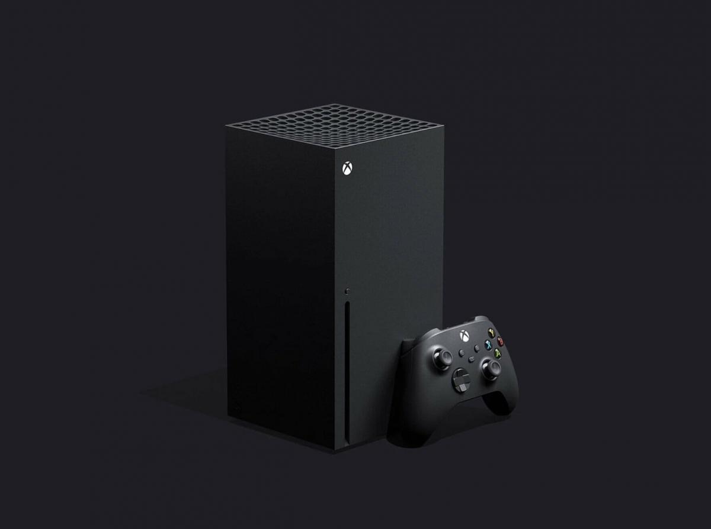
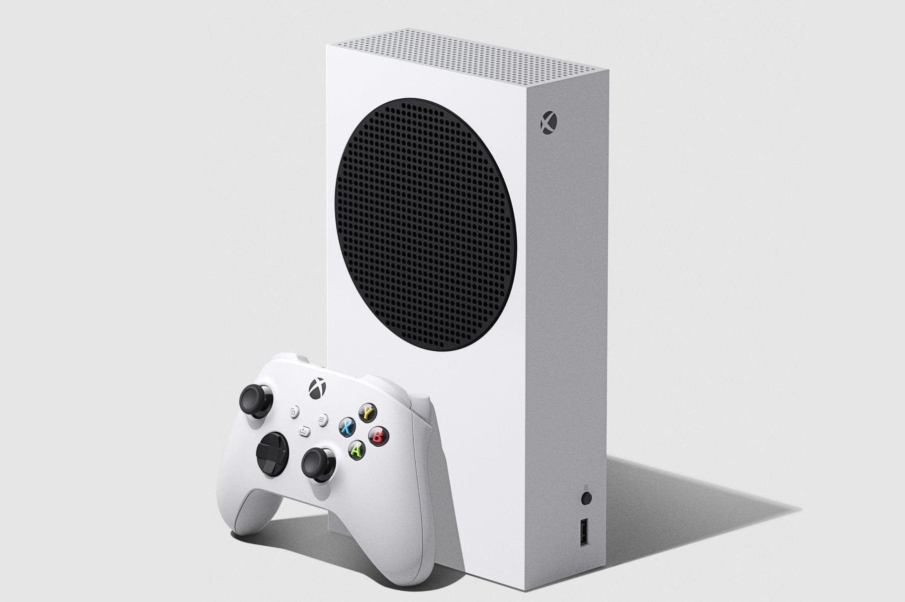

Microsoft nos sorprendio en su conferencia con esta nueva generacion, ambas consolas soportan 1920x1080p 60hz, un minimo a dia de hoy,
Pero no solo eso, la series X llega a 1920x1080p 144Hz e incluso se puede jugar a 4K 60Hz, algo impensable en anteriores generaciones
.
.
Puntos a mencionar aparte de su potencia muy superior a su anterior generacion son: .
.
-Incluyen un ssd m.2 con velocidades de lectura muy superiores a discos mecanicos
.
-Quick resume (cambiar de un juego a otro)
.
-Game pass ultimate y su gran abanico de juegos
.
Tambien son remarcables tanto el bajo coste de la Series S (300 USD) como su bajo consumo (65W) .
Vamos a ver una pequeña comparativa contra su anterior generacion .
Ahora, vamos a ver la nueva PS5

Esta nueva PS5 al igual que las series x trae un disco SSD m.2 para velocidades y cargas abrumadoras, tenemos dos versiones de la consola
.
Version con disquetera por 500e
.
Version sin disquetera por 400e
.
Ambas tienen la misma potencia, esa es su unica diferenciaSu punto mas fuerte sin duda es el nuevo Mando DualSense

El dual sense ha sido revolucionario tanto por su sistema de vibracion como gatillos adaptativos.
Aqui dejo un enlace de un video mirando los gatillos adaptativos en el nuevo Call Of Duty
.
/
Otro gran punto son los exclusivos que han venido con la nueva PS5, muy esperados como son /
.
/
/
Demon souls remake

.
/
/
Spiderman: Miles Morales

.
/
/
Conclusion
Posiblemente este sea la mayor novedad de esta generacion, al fin se le hace justicia a las consolas! .
/
Ahora mismo si tienes un presupuesto escaso y quieres jugar bien, es lo mejor que hay. /
por 400 euros puedes jugar a todo, a buenas resoluciones y tasa de refresco. Sin duda una gran opcion ahora mismo... pero como es costumbre ya.
el stock es una pelea a muerte para conseguir una.. Esperemos que en 2021 se normalice el stock